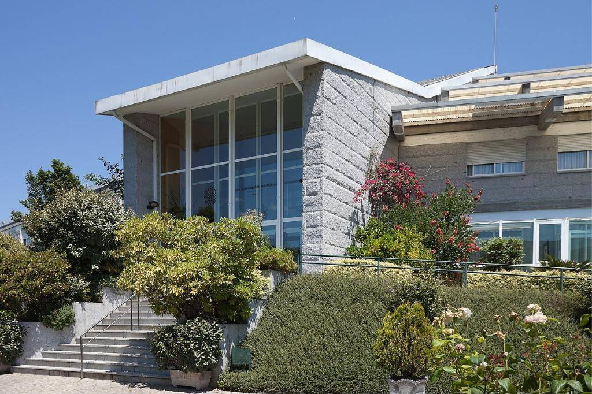

Termas
1. Termas Outariz de Ourense
2. Termas Prexigueiros, Ribadavia
3. Balneario Termal, Cortegada
4. Termas en Baños de Molgas
5. Balneario Termal, Arnoia

Foto: Luis Miguel Bugallo Sánchez (CC BY-SA 3.0), Wikimedia Commons

Foto: Luis Miguel Bugallo Sánchez (CC BY-SA 3.0), Wikimedia Commons